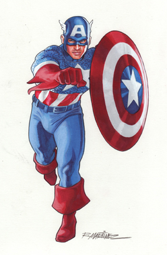

"CAPTAIN AMERICA"
333-333-3333 | captain_MakeAmericaGreatAgain@gmail.com | linkedin.com/in/captainamerica

Captain America (Steve Rogers) is a fictional superhero appearing in American comic books published by Marvel Comics. Created by cartoonists Joe Simon and Jack Kirby, the character first appeared in Captain America Comics #1 (cover dated March 1941) from Timely Comics, a predecessor of Marvel Comics. Captain America was designed as a patriotic supersoldier who often fought the Axis powers of World War II and was Timely Comics' most popular character during the wartime period. The popularity of superheroes waned following the war and the Captain America comic book was discontinued in 1950, with a short-lived revival in 1953. Since Marvel Comics revived the character in 1964, Captain America has remained in publication.
WORK EXPERIENCE
Avengers
Integrant
- Served as the leader for the Avengers.
- Tactical and leadership to the team, provided team morale and training.
- Served as the ambassador for the team and military strategist.
Army
Integrant
- Stopped the red skull from conquering the world.
- Stopped Thanos from conquering the universe along with the other avengers.
- Stopped the skrulls from invading the world.
- Helped stopped the rampages of hulk many times and have saved the world more times than I can count.
SKILLS, ACTIVITIES & INTERESTS
- Languages: Working proficiency in Spanish and Russian.
- Technical Skills: I know how to use all types of military equipment, I carry a nigh indestructible shield that is created by a yet unknown metal that I can use both offensively and defensively.
- Activities: I created my own form of martial arts from a combination of styles including judo, boxing, karate, and military martial arts.
- Interests: Travel, learning from other cultures, fighting and technology.
ADVANTAGE OF CAPTAIN AMERICA OVER IRON MAN
| Power |
Combating |
| Without his suit, Stark (Iron Man) would be pretty much powerless in front of Captain America |
Master in Hand to Hand combact & has Superhuman strength |
CONTACT INFORMATION
Written by Miguel Bezara | linkedin.com/in/miguelbezara
Visit us at: file:///Users/miguelbezara/Desktop/Code/CIM111/a2/index.html
8250 sw 72nd Ct w111
Guayana, BO
8050
Venezuela